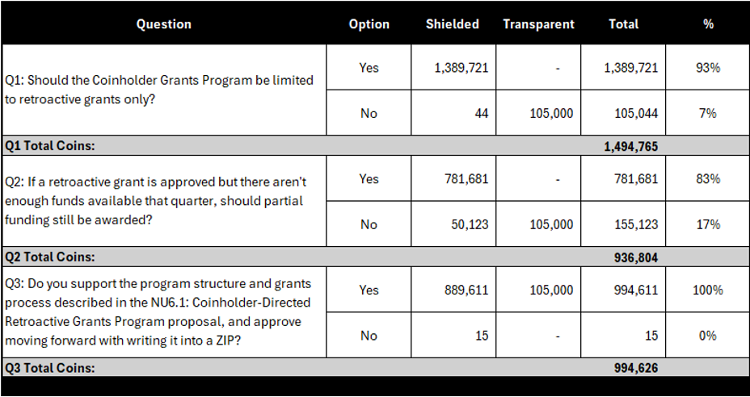

Zcash Coinholders Approve Retroactive Grants Program

The results are in! Coinholders have voted to ratify the new Coinholder Grants Program, confirming it will operate as a retroactive grants program and approving the process outlined in the NU6.1: Coinholder-Directed Retroactive Grants Program proposal. This vote set a new record for participation, with 1.49 million coins voting on Question 1. More than half of the coins in the Orchard pool took part, and over 1 million coins moved into the Orchard pool since the last vote in April.
Here is a summary of the results:

ZIP 1016
As part of Network Upgrade 6.1, Zcash will implement the Community & Coinholder (C&C) Funding Model, originally proposed by Josh Swihart of the Electric Coin Company (ECC) and defined in ZIP 1016. Under this model, 12% of block rewards will flow to the Coinholder Grants Program from November 2025 until Zcash’s third halving in 2028, and 8% of block rewards will continue to fund Zcash Community Grants (ZCG) during this period. Initial capital for the Coinholder Grants Program will come from the Deferred Dev Fund Lockbox, expected to hold roughly 70,000 ZEC when the model takes effect.
The funds will be held in a legally-binding multisig wallet controlled by three Keyholder Organizations (ECC, the Zcash Foundation, and Shielded Labs) who are required to execute coinholder-approved decisions unless proposals raise legal, regulatory, or community-harm concerns. A minimum participation threshold of 420,000 ZEC (around 2% of total supply) ensures meaningful coinholder engagement.
Coinholder-Directed Retroactive Grants Program
The NU6.1: Coinholder-Directed Retroactive Grants Program, proposed by Jason McGee of Shielded Labs, defines the structure and process for the Coinholder Grants Program within the C&C Funding Model. Under this approach, grants are awarded only for work that has been fully completed, rather than providing funding in advance based on milestones. Payments are made only for delivered and verifiable results, removing the need for milestone tracking, complex fund management, or hedging, and are issued directly from the multisig wallet at the current market price.
This retroactive model is designed to reduce the risk of paying for incomplete or low-quality work, simplify administration, and scale effectively for coinholder-driven governance. At the same time, it requires teams to self-fund their work before applying and carries more risk for builders, as funding is not guaranteed until after completion.
With NU6.1 in place, Zcash will operate three grants programs. Zcash Community Grants (ZCG) will continue as a flexible, milestone-based program for medium and large projects, with grants paid as work progresses. The Coinholder Grants Program will run quarterly and focus exclusively on retroactive funding, awarding grants only for completed work. The ZecHub Bounty Program, funded by ZCG and run independently by ZecHub, will provide small grants and bounties for grassroots community and educational initiatives.
Shielded Labs
Shielded Labs is a donation-based organization that funds its work independently of Zcash block rewards. It relies on contributions from ZEC holders and supporters and has no intention of applying for grants from the Coinholder Grants Program or any other Dev Fund source. While Shielded Labs will not seek funding, it recognizes the importance of the Dev Fund for sustaining core protocol development, supporting independent teams, and enabling organizations like ECC and the Zcash Foundation to apply for additional support when needed.
One of Shielded Labs’ core values is to honor the holders. We believe the price of ZEC matters, that coinholders should have a voice in shaping Zcash’s direction, and we prioritize initiatives that benefit ZEC holders. In line with that principle, Shielded Labs endorsed the Community & Coinholder (C&C) Funding Model and proposed the NU6.1: Coinholder-Directed Retroactive Grants Program as a practical starting point for empowering ZEC holders in the decision-making process. The NU6.1 proposal places funding decisions in the hands of coinholders, creating a pathway for increased participation in funding and governance, with the aim of expanding coinholder involvement over time.
Next Steps
Now that the poll results are in, Shielded Labs will write the NU6.1: Coinholder-Directed Retroactive Grants Program into a ZIP that will formalize the program structure and grant process. By early October, the ZIP will be available for community review and feedback.
In parallel, preparations are underway for the first round of retroactive grant proposals, which is scheduled for November. A call for proposals will open on Monday, September 8, followed by a submission window and a mandatory 30-day review period. The registration period for coinholders to participate in the vote will begin in late October, and the coinholder poll to vote on grant proposals will take place in November. Once voting concludes and NU6.1 activates, approved proposals will receive funding directly from the Coinholder Grants Program treasury.
Stay up to date by joining the conversation on the Zcash Community Forum.